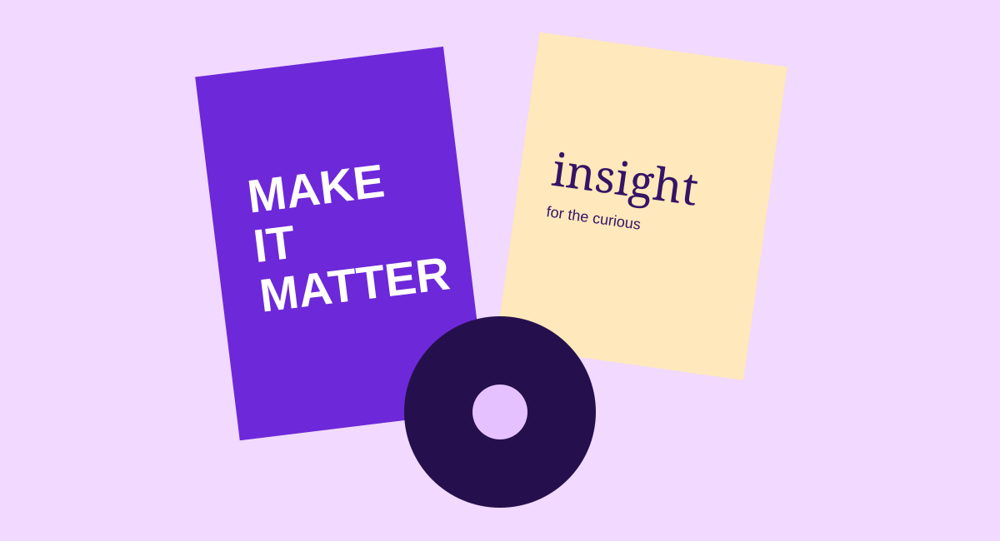

Social media management - Illustrative case study
Editorial content
system
A complete social media framework for a growing brand that wanted to show up consistently-without scrambling for ideas every week.

A content engine made for the platforms people actually use.
This showcase demonstrates how a social presence can be organised across Instagram, Facebook, LinkedIn and TikTok. The system gives each platform a role, keeps the brand visually coherent, and translates a monthly marketing goal into a dependable rhythm of useful, engaging posts.
02 Challenge
Move from inconsistent posting to a recognisable point of view.
- Translate one brand story for four distinct platform behaviours
- Build enough variety to stay relevant without losing consistency
- Make planning, approvals and performance reporting easier to manage
Content is arranged around four repeatable pillars: insight, proof, personality and invitation. A monthly calendar maps each post to a purpose; adaptable Canva templates maintain the visual language; short-form edits make campaign ideas travel further. Reporting then feeds the strongest themes back into the next month's plan.
04 What it enables
This is an illustrative portfolio concept. Use real, permissioned analytics and outcomes for a client case study.